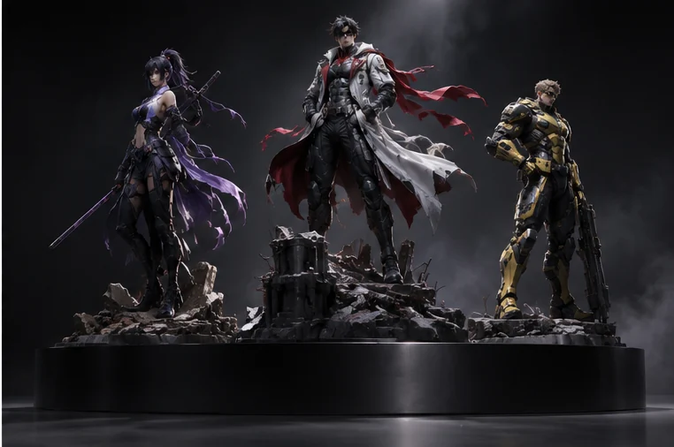

07 / OUR POINT OF VIEWFRAMEVERSE — 2026
For the love of the worlds.
A digital-first destination exploring the objects, artwork and gatherings that connect anime and comics culture.

BEYOND THE FRAMEIT STARTS
IT STARTS
WITH WONDER.
WHAT WE BELIEVECollecting is a way
Collecting is a way
of remembering.
FRAMEVERSE is an independent creative platform devoted to anime, comics, figure design and the communities that bring them together.
We explore these worlds through an original visual concept archive, practical collecting notes and a carefully sourced directory of conventions. Our perspective is editorial and design-led: fewer distractions, more room to see the work.
Get in touch ↗01
DESIGN FIRST
Every composition should earn your attention.
02
CULTURE IN CONTEXT
Respect the creators, communities and source material.
03
CURIOUS BY NATURE
Always exploring what collecting can become.